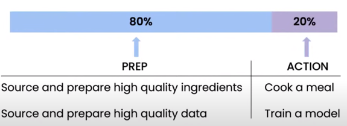
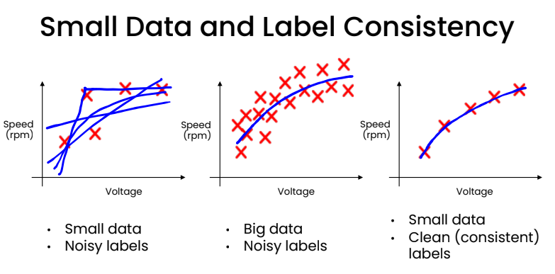

Notes: Required questions - theory Kirenz¶
Data-centric AI¶
Notes on the video of AI pioneer Andrew Ng:”A Chat with Andrew on MLOps: From Model-centric to Data-centric AI”.
AI-System = Code (model/algorithm) + Data
Data is food for AI
It’s very important especially for small data sets that the labels are consistencly
Noisy Dataset: data that contains a large amount of additional meaningless information. E.g. corrupted data…all data that cannot be understood and interpreted by a user system.
Noisy labels: labels that were set incorrectly or inconsitently
Theory: Clean vs. noisy Data
You have 500 Examples and 12% of the examples are noisy (incorrectly or inconsitently labeld)The following are about equally effective: - Clean up the noise => 60 examples - Collect annother 500 new examples (double the training set)
With a data centric view, there is significant of room for improvment in problems <10.000 examples
Required questions
Describe the lifecycle of an ML project
What is the difference between a model-centric vs data-centric view
Model-centric view
Collect what data you can, and develop a model good enough to deal with the noise in the data.Hold the data fixed and iteratively improve the code/model.
Data-centric view
The consistency of the data is paramount. Use tools to improve the data quality; this will allow multiple models to do well.Hold the code fixed and iteratively improve the data..
Describe MLOps’ most important task
Ensure consistently high-quality data in all phases oft he ML project lifecycle
What is good Data?Defined consistently (definition of labels y is unambiguous)
Cover of important cases (good coverage of inputs x)
Enough data – for example enough data of speech with car noise in background
Has timely feedback from production data (distribution covers data drift and concept drift)
Sized appropriately